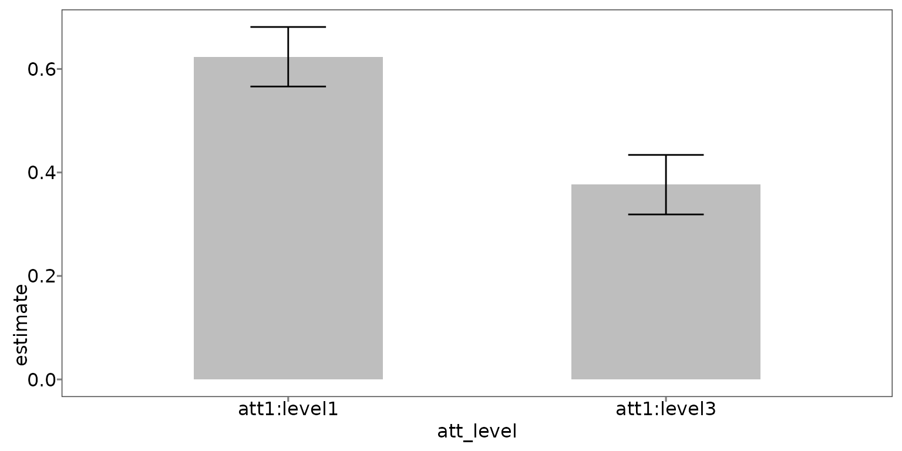
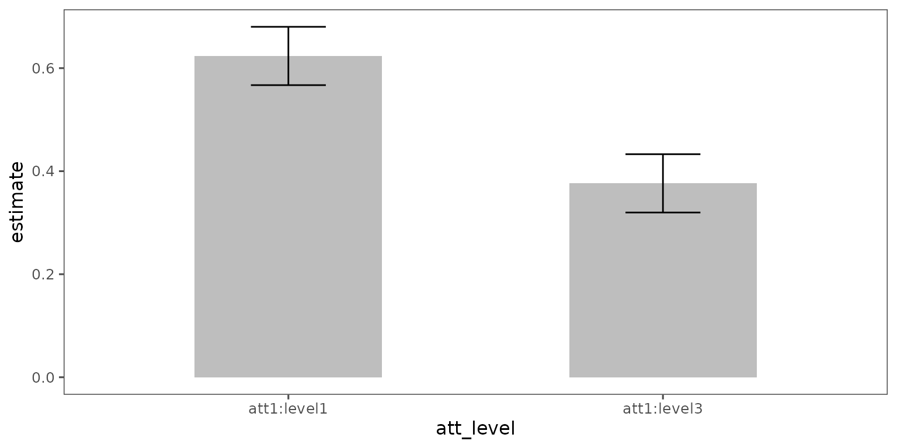
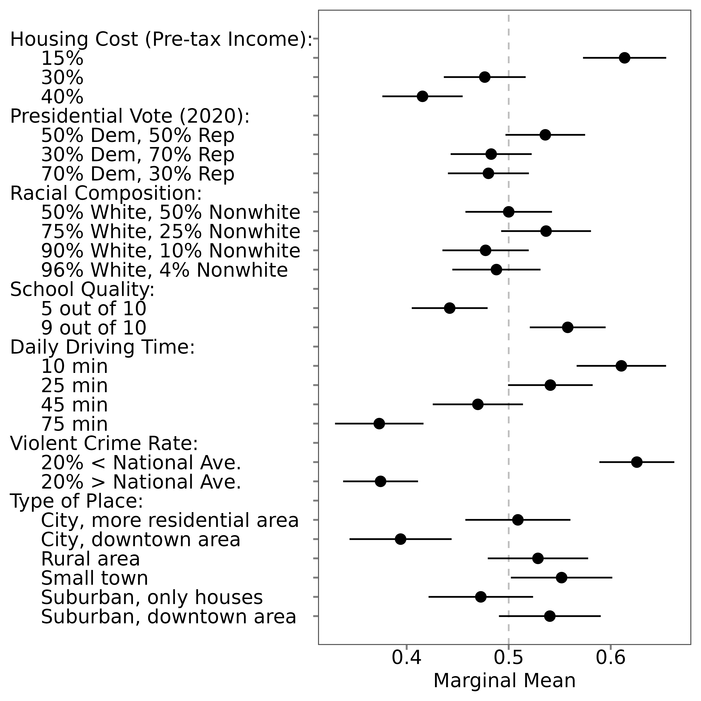

5. Visualize MMs or AMCEs
visualize.RmdThe projoint package features a set of tools for
producing publication-ready figures from conjoint analyses.
5.2 Profile-level analysis
Visualize MMs and AMCEs
By default, most researchers should prefer to view the corrected estimates of either MMs or AMCEs. Researchers can, however, choose to instead visualize the uncorrected estimates, or to view both together.
plot(mm)
plot(mm, .estimates = "uncorrected")
plot(mm, .estimates = "both")
plot(amce)
plot(amce, .estimates = "uncorrected")
plot(amce, .estimates = "both")
5.3 Choice-level analysis
To undertake choice-level analysis, you first need to specify your
quantity of interest using set_qoi().
qoi_mm <- set_qoi(.structure = "choice_level",
.att_choose = "att1",
.lev_choose = "level1",
.att_notchoose = "att1",
.lev_notchoose = "level3")You can then estimate the choice-level marginal means:
choice_mm <- projoint(.data = out1_arranged,
.structure = "choice_level",
.qoi = qoi_mm,
.ignore_position = TRUE)
print(choice_mm)## [A projoint output]
## Estimand: mm
## Structure: choice_level
## IRR: Estimated
## Tau: 0.1721281
## Remove ties: TRUE
## SE methods: analytical
summary(choice_mm)## # A tibble: 2 × 7
## estimand estimate se conf.low conf.high att_level_choose
## <chr> <dbl> <dbl> <dbl> <dbl> <chr>
## 1 mm_uncorrected 0.581 0.0187 0.544 0.618 att1:level1
## 2 mm_corrected 0.624 0.0288 0.567 0.680 att1:level1
## # ℹ 1 more variable: att_level_notchoose <chr>
plot(choice_mm)
Since there are not many estimates, we encourage your to make plots based on the objectives of your research. The default plot for the choice-level marginal means is a basic ggplot object, which compares the marginal mean for each of the two options. The sum of the two percentages is 100, and thus you may think that redundant information is presented in this figure. But we think this figure is an effective way to show the results of a head-to-head (choice-level) comparison.
You can polish by adding some layers :
plot(choice_mm,
.labels = c("15% of pre-tax income",
"30% of pre-tax income")) +
labs(y = "Marginal mean",
x = "Housing Cost") +
coord_cartesian(ylim = c(0, 1)) +
geom_hline(yintercept = 0.5,
linetype = "dashed",
color = "darkgray")
Note: The current version of the
projoint package does not have a function to plot
choice-level average marginal component effects. Stay tuned!